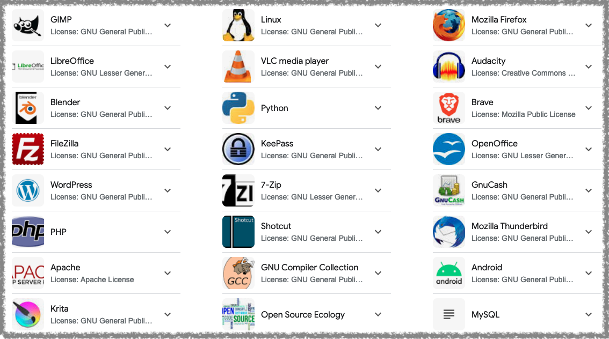

Reproducible Research using R
1st SARA Summer School Session Details
1 Day 1 Introduction to Data Science
1.1 What is reproducible research?
Definition of reproducible research.
“The goal of reproducible research is to tie specific instructions to data analysis and experimental data so that scholarship can be recreated, understood, and verified.” (Source: John Blischak, Alison Hill, Ben Marwick, Daniel Sjoberg, Will Landau (2024). CRAN Task View: Reproducible Research. Version 2024-06-14. URL https://CRAN.R-project.org/view=ReproducibleResearch.)
“Research is reproducible when others can reproduce the results of a scientific study given only the original data, code, and documentation” (Source: Alston, J. M., & Rick, J. A. (2021). A Beginner’s Guide to Conducting Reproducible Research. The Bulletin of the Ecological Society of America, 102(2), e01801. https://doi.org/10.1002/bes2.1801)
Important parts of reproducible research.
- Data: people can access your original data.
- Code: (visualization, tables, images, and statistics).
- Documentation: (for example proposal, paper, thesis, slides, and websites).
How to accomplish reproducible research using data science?
R + Quarto
Here show a demo of a quarto document. The document should have data, code, and documentation. Also, demonstrate it converting into multiple formats.
This demo should help the participants to understand how using R and Quarto can help them to overcome the 😓 pain of cut-copy-paste cycle.
1.2 Introduction to R
What is open-access?
“Open-source software (OSS) is computer software that is released under a license in which the copyright holder grants users the rights to use, study, change, and distribute the software and its source code to anyone and for any purpose.” (Source: Wikipedia)

What is R?
“R is a free software environment for statistical computing and graphics.”
Why to use R?
Here are a few screen-shots of top Reddit answers
::: {.r-stack}
{.fragment width="450" height="300"}
{.fragment width="300" height="450"}
{.fragment width="400" height="400"}
:::How and from where to download R?
1.3 Introduction to RStudio
- What is RStudio?
Soon, posit will launch their new data science IDE, positron (Source: https://github.com/posit-dev/positron) as well.
How and from where to download RStudio?
If R is there then why RStudio?
How and why to use RStudio project?
1.4 Introduction to Quarto
Key parts/components
- YAML
- Code chunk
- Documentation
Headings
Add images
Teach code chunk in detail
2 Day 2 Data Visualization
We will also learn when to make which plot in an order:
- bar plot
- histogram
- line plot
- dot plot
- correlation plot
We will use R package ggplot2 to make plots and do the customization like:
- adding a theme
- making your own theme
- using ggplot extension plots
- adding text and statistics to the plot
Give them link of a few famous ggplot users like
3 Day 3 Research Design
Import data in R from your local computer
Types of variables
Format of data required in RStudio
4 Day 4 Quantitative Analysis
Check data format, name of the variables, sample size & missing values (column and rows)
Plot missing values
4.1 Why to learn statistics?
4.2 Descriptive statistics
central tendencies
dispersion
how to report descriptive statistics
4.3 Correlation
Correlation calculation
Reporting correlation
4.4 Regression
Regression calculation
How to report regression results